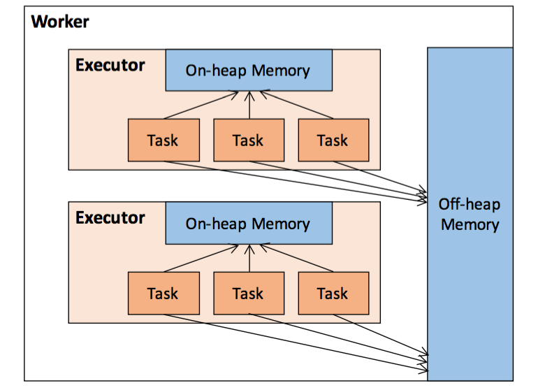
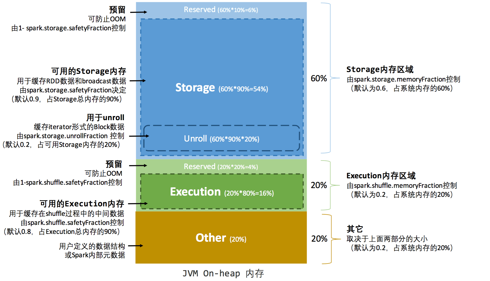

本文主要总结Spark 2.X的内存管理，Spark自从1.6以后，提出了一个新的内存管理模型Unified Memory Management。
一个Spark作业主要启动Driver和Executor两类JVM进程，Driver对内存的管理较为简单，主要负责Spark作业的调度，Stage的划分、任务的分发、状态的监听等，Executor则负责具体的计算任务，涉及到计算、执行结果回传和持久化RDD等功能。
Spark作为内存计算框架，创新的引入了堆外内存，这种机制让Spark突破JVM内存的管理，直接使用系统内存，极大的提高了内存使用，不过一个显著的问题就是当系统内存不太够的时候，会造成主机也无法正常工作。
堆内和堆外内存
Spark Executor的堆外内存示意图如下所示

堆内存
控制参数
- executor-memory
- spark.executor.memory
Executor内所有的线程并发使用这些内存，这些内存我们主要关注在执行内存和存储内存两部分上。存储内存可以用来缓存RDD和广播变量，而Spark执行shuffle操作的时候需要先将数据缓存到执行内存，按照一定的策略溢写到磁盘。其他剩余的内存不做特殊处理。
堆外内存
控制参数
- spark.memory.offHeap.enabled 是否启用
- spark.memory.offHeap.size 堆外大小
- 程序代码StorageLevel.OFF_HEAP
为了进一步优化内存的使用以及提高 Shuffle 时排序的效率，Spark通过堆外内存机制可以直接操作系统堆外内存，减少了不必要的内存开销，以及频繁的 GC 扫描和回收，提升了处理性能。堆外内存可以被精确地申请和释放，而且序列化的数据占用的空间可以被精确计算，所以相比堆内内存来说降低了管理的难度，也降低了误差。
默认情况下并不开启，堆外内存很简单的划分为两块，执行和存储。
问题：spark.memory.offHeap.enabled 这个参数spark 官方默认为false。 既然这个特性比较出色，能减小GC、内存、序列化开销，为什么不默认true使用呢？
目前在offHeap存储的数据只能是序列化的二进制数据，意味着它并不是结构化的数据，而Spark在计算的时候在大部分场景下只能对非序列化的Partition进行处理，因为需要对每条Record做运算。二进制数据的序列化和反序列化都需要开销，所以用offHeap存储的性能未必就一定强过onHeap存储。
直接操作on-heap的效率是高于操作off-heap的。那为什么还要用off-heap呢？这就是考虑GC情况，直接操作on-heap数据导致的GC时间开销可能大于操作off-heap的序列化开销，这时候使用off-heap的balance性能就可能更好。
所以使用off-heap的可能场景：
- 小内存情况，作业GC因为内存不够导致非常频繁；
- 大内存情况，如ML作业一个executor 十几甚至几十G，也容易GC，则使用off-heap可能有更好效果。（需要实际验证）
内存空间
Spark 1.6以前静态内存管理
Spark 1.6以前将内存的区块划分设为固定大小，如下图所示

我们关心的存储内存和执行内存大小分别如下
可用的存储内存 = systemMaxMemory * spark.storage.memoryFraction * spark.storage.safetyFraction
可用的执行内存 = systemMaxMemory * spark.shuffle.memoryFraction * spark.shuffle.safetyFraction
其中
systemMaxMemory即为申请的Executor内存大小，控制参数为spark.executor.memory
safetyFraction 为预留的保护区域，用来防止OOM。
堆外内存的管理就非常简单了，默认情况下直接按50%的比例将堆外内存分为存储内存和执行内存，可以通过spark.memory.storageFraction来控制比例。
Spark 1.6之后的统一内存管理
与上一版最大的区别就是每一块内存的大小不固定，为动态调整。堆外和堆内分别如下图所示

动态机制如下
- spark.storage.storageFraction 控制存储内存和执行内存双方各自拥有的空间的范围；
- 双方的空间都不足时，则存储到硬盘；若己方空间不足而对方空余时，可借用对方的空间；
- 执行内存的空间被对方占用后，可让对方将占用的部分转存到硬盘，然后”归还”借用的空间
- 存储内存的空间被对方占用后，无法让对方”归还”，因为需要考虑 Shuffle 过程中的很多因素，实现起来较为复杂。
优点：一定程度上提高了堆内和堆外内存资源的利用率，降低了开发者维护 Spark 内存的难度；
缺点：如果存储内存的空间太大或者说缓存的数据过多，反而会导致频繁的全量垃圾回收，降低任务执行时的性能，因为缓存的 RDD 数据通常都是长期驻留内存的。